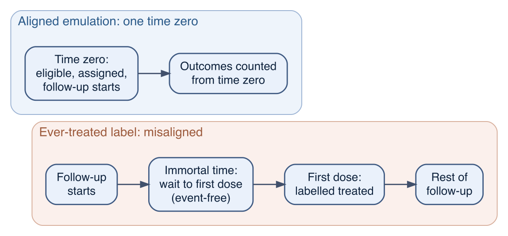

Show code
obs <- simulate_cohort_longitudinal(n = 50000, seed = 2024)
truth <- attr(obs, "truth") # the oracle, available because we built the cohort
K <- attr(obs, "params")$K
obs <- obs |> arrange(id, k)Every comparative question we ask of observational data has a randomised trial hiding inside it. “Does Drug A prevent stroke?” is shorthand for “what would a trial that randomised patients to take Drug A, or not, have found?” The data we have were not generated by such a trial, but the trial is still the standard against which any answer is judged. Target trial emulation makes that standard explicit: we write down the protocol of the trial we would run if we could, and then ask, component by component, how each part of that protocol can be enacted with the data we actually have.1
The value of the exercise is not rhetorical. The errors that have repeatedly produced wrong answers in observational drug research — a treatment that looks protective because of how follow-up time was counted, a comparison that selects out the patients most likely to do badly — are, in this framing, failures to emulate a particular element of a trial protocol. Writing the protocol first turns those errors from subtle statistical accidents into visible design decisions, each of which a trialist would never get wrong because the mechanics of a randomised experiment rule them out.2 This chapter is about the design layer: the biases the framing is meant to prevent, the protocol it asks us to specify, and the choices inside that protocol that matter most. The estimation of effects that change over time — the machinery of inverse-probability weighting and the g-formula — is the subject of Chapter 14; here we set those problems up rather than solve them.
We use the longitudinal version of the master cohort throughout. Each of about 50 000 hypertensive patients is seen at five visits; at each visit we record blood pressure, the treatment decision for that interval, and whether a stroke occurred. Because the cohort was simulated from a known data-generating process, we can read off the answer any emulation is trying to recover.
obs <- simulate_cohort_longitudinal(n = 50000, seed = 2024)
truth <- attr(obs, "truth") # the oracle, available because we built the cohort
K <- attr(obs, "params")$K
obs <- obs |> arrange(id, k)Four biases recur in observational comparisons of treated and untreated patients. The first is a fact of nature that no design erases on its own; the other three are introduced by the analyst, and are the ones the discipline of emulation is built to remove.
The reason a patient is treated is usually a reason they were at risk to begin with. Sicker patients are more likely to be given Drug A and more likely to have a stroke whether or not they take it, so the treated and untreated are not comparable. This is the bias the whole causal part of the book turns on: in the cohort it is severe enough to reverse the sign of the crude association, making a protective drug look harmful (Chapter 12). Emulation does not by itself remove confounding — only randomisation does that — but it disciplines the comparison so that the measured confounders can be adjusted for, and it isolates the part of the problem that adjustment cannot reach.
Immortal time is a stretch of follow-up during which, because of the way exposure is defined, the outcome cannot occur.3 It arises when a patient’s treatment group is decided using information from after follow-up begins. The classic construction classifies a patient as “treated” if they ever receive the drug during the study, and counts their follow-up from an earlier landmark, such as diagnosis or cohort entry. To be classified treated, a patient must survive event-free long enough to receive the first dose; that waiting time is “immortal” — no event can fall in it without moving the patient to the other group — yet it is counted as treated person-time. The treated group is thereby credited with a stretch of guaranteed event-free time that has nothing to do with the drug, and any patient who has the event early is sorted into the comparator. Both effects make the treatment look protective regardless of whether it is.
Enrolling patients who are already taking the drug at the start of follow-up conditions the comparison on having survived and tolerated treatment up to that point. Patients who had an early event, or who stopped because of side effects, are not in the prevalent-user pool — they have been selected out before observation begins. The surviving users are a depleted, favourable subset (depletion of susceptibles), and their start of follow-up does not correspond to any well-defined moment in the course of treatment.4 The comparison inherits a head start that, again, has nothing to do with the drug’s effect.
The previous two biases are instances of a more general one: defining eligibility, or the treatment group, using information that postdates the start of follow-up. Whenever the moment a patient becomes eligible, the moment their strategy is decided, and the moment their follow-up clock starts are allowed to differ, the gap between them is person-time that has been classified with knowledge of the future, and selection bias follows.5
The common thread is alignment. Confounding aside, the analyst-introduced biases all come from a failure to align three events that, in a randomised trial, occur together by construction: the assessment of eligibility, the assignment of a treatment strategy, and the start of follow-up. In a trial these coincide at randomisation, which is why a trialist cannot accidentally count immortal time or enrol prevalent users. The single discipline that prevents the whole family of biases is to reproduce that coincidence.
Target trial emulation removes the analyst-introduced biases by fixing a time zero for each patient at which eligibility is assessed, a treatment strategy is assigned, and follow-up begins — all using only information available at or before that instant. With that one rule in place:

The cohort lets us see the bias appear and then disappear, because we can analyse the same patients two ways that differ only in how treatment time is classified. The first respects time: at each visit a patient is treated or not, and we compare the stroke rate in treated intervals with the rate in untreated intervals. The second commits the immortal-time error: we label each patient by whether they are ever treated during the five visits and count all of their intervals — including those before they first received the drug — in that group.
# exposure defined two ways on the same person-period data
person <- obs |>
group_by(id) |>
summarise(ever = max(A),
first_treat = if (any(A == 1)) min(k[A == 1]) else Inf,
.groups = "drop")
obs2 <- obs |> left_join(person, by = "id")
# (1) time-respecting: an interval is "treated" iff the drug is taken that interval
rate_tv <- obs2 |> group_by(current = A) |> summarise(rate = mean(Y), .groups = "drop")
rr_tv <- with(rate_tv, rate[current == 1] / rate[current == 0])
# (2) immortal-time: classify the whole person by EVER being treated,
# counting every interval (including pre-initiation) in that group
rate_ever <- obs2 |> group_by(group = ever) |> summarise(rate = mean(Y), .groups = "drop")
rr_ever <- with(rate_ever, rate[group == 1] / rate[group == 0])
# the immortal stretch: pre-initiation intervals of ever-treated patients,
# which are labelled "treated" but in which (by construction) no event can occur
immortal <- obs2 |> filter(ever == 1, k < first_treat)
share_immortal <- nrow(immortal) / sum(obs2$ever == 1)
c(truth_RR = round(truth$RR, 3),
time_aligned_RR = round(rr_tv, 3),
immortal_RR = round(rr_ever, 3),
immortal_share = round(share_immortal, 3),
events_in_immortal_time = sum(immortal$Y)) truth_RR time_aligned_RR immortal_RR
0.546 1.304 0.536
immortal_share events_in_immortal_time
0.135 0.000 The true effect of taking the drug at every visit versus never is a risk ratio of 0.55 — protective. The time-respecting comparison returns a risk ratio of 1.3: the drug looks harmful, because treated intervals are the high-blood-pressure intervals in which strokes are more likely. That number is confounded by indication, and recovering the truth from it is the work of Chapters 12 and 14 — but it does not invent any person-time. The immortal-time analysis returns a risk ratio of 0.54: the drug now looks strongly protective. The mechanism is laid bare by the diagnostics: 13% of the person-time credited to the treated group is pre-initiation waiting time, and it contains 0 events — none, by construction.
The instructive part is that the immortal-time estimate, 0.54, lands close to the true 0.55. An analyst who ran only that analysis would report the right answer for entirely the wrong reason, and would have no warning. Had the drug been useless or harmful, the same machinery would have manufactured an apparent benefit out of the same event-free waiting time. The emulation forbids the construction at the design stage: classify each patient by the strategy assigned at time zero, not by what they go on to receive.
The protocol is specified as a table with one row per component of the trial. The left column states what the ideal randomised trial would do; the right column states how each component is enacted with the observational cohort. Writing the table is the core of the method: a component that cannot be filled in, or that can only be filled in by using post-baseline information, is precisely where a bias would enter.
tibble(
Component = c("Eligibility", "Time zero (start of follow-up)", "Treatment strategies",
"Assignment", "Outcome", "Follow-up", "Causal contrast", "Analysis plan"),
`Target trial` = c(
"Hypertensive adults, no prior stroke, not currently taking Drug A (new users).",
"The moment of randomisation: eligibility is met, a strategy is assigned, and follow-up begins together, so no person-time precedes assignment.",
"(a) Initiate Drug A and take it at every visit ('always treat'); (b) never take it ('never treat'). A dynamic option: take it whenever SBP exceeds a threshold.",
"Randomise eligible patients to a strategy at time zero; ideally with blinding.",
"Incident stroke during follow-up.",
"From time zero until stroke, loss to follow-up, or the administrative end of the study.",
"Intention-to-treat effect (of being assigned a strategy) and/or per-protocol effect (of adhering to it), on the risk-difference or risk-ratio scale.",
"ITT: compare the assigned groups. Per-protocol: adjust for adherence and post-baseline confounders."),
`Emulation with the cohort` = c(
"Patients untreated at their first recorded visit — in this cohort everyone enters untreated, so each is a new user. Baseline age, diabetes, severity and SBP are recorded at entry.",
"The first visit (k = 1), fixed using only information available at or before it. Aligning eligibility, assignment, and the start of follow-up at this one instant is what closes off immortal time and prevalent-user bias. It is also the most delicate choice: a start defined with any post-baseline information reintroduces them, and when eligibility is met at several visits each may serve as a separate time zero (a sequence of trials).",
"The same rules applied to the per-visit treatment A at visits k = 1..5. Each strategy is a well-defined intervention (consistency, Chapter 10).",
"No randomisation. Assume the measured baseline covariates are a sufficient adjustment set (conditional exchangeability, Chapter 11); emulate random assignment by standardisation or inverse-probability weighting on those covariates (Chapter 12).",
"The per-visit indicator Y; the first stroke ends follow-up.",
"From time zero (visit 1) to the event or the fifth visit, in person-period rows; a patient leaves the risk set at the event.",
"ITT analogue: initiators (treated at k = 1) versus non-initiators. Per-protocol: the sustained-strategy contrast 'always' versus 'never' — the estimand of Chapter 14.",
"ITT analogue: standardise or weight on baseline covariates (Chapter 12). Per-protocol: IP-weighted marginal structural model or the g-formula (Chapter 14); Bayesian g-computation (Chapter 28).")
) |>
kbl(caption = "The target trial and its emulation with the longitudinal cohort.") |>
kable_styling(full_width = FALSE) |>
column_spec(1, bold = TRUE) |>
column_spec(2:3, width = "16em")| Component | Target trial | Emulation with the cohort |
|---|---|---|
| Eligibility | Hypertensive adults, no prior stroke, not currently taking Drug A (new users). | Patients untreated at their first recorded visit <U+2014> in this cohort everyone enters untreated, so each is a new user. Baseline age, diabetes, severity and SBP are recorded at entry. |
| Time zero (start of follow-up) | The moment of randomisation: eligibility is met, a strategy is assigned, and follow-up begins together, so no person-time precedes assignment. | The first visit (k = 1), fixed using only information available at or before it. Aligning eligibility, assignment, and the start of follow-up at this one instant is what closes off immortal time and prevalent-user bias. It is also the most delicate choice: a start defined with any post-baseline information reintroduces them, and when eligibility is met at several visits each may serve as a separate time zero (a sequence of trials). |
| Treatment strategies | (a) Initiate Drug A and take it at every visit ('always treat'); (b) never take it ('never treat'). A dynamic option: take it whenever SBP exceeds a threshold. | The same rules applied to the per-visit treatment A at visits k = 1..5. Each strategy is a well-defined intervention (consistency, Chapter 10). |
| Assignment | Randomise eligible patients to a strategy at time zero; ideally with blinding. | No randomisation. Assume the measured baseline covariates are a sufficient adjustment set (conditional exchangeability, Chapter 11); emulate random assignment by standardisation or inverse-probability weighting on those covariates (Chapter 12). |
| Outcome | Incident stroke during follow-up. | The per-visit indicator Y; the first stroke ends follow-up. |
| Follow-up | From time zero until stroke, loss to follow-up, or the administrative end of the study. | From time zero (visit 1) to the event or the fifth visit, in person-period rows; a patient leaves the risk set at the event. |
| Causal contrast | Intention-to-treat effect (of being assigned a strategy) and/or per-protocol effect (of adhering to it), on the risk-difference or risk-ratio scale. | ITT analogue: initiators (treated at k = 1) versus non-initiators. Per-protocol: the sustained-strategy contrast 'always' versus 'never' <U+2014> the estimand of Chapter 14. |
| Analysis plan | ITT: compare the assigned groups. Per-protocol: adjust for adherence and post-baseline confounders. | ITT analogue: standardise or weight on baseline covariates (Chapter 12). Per-protocol: IP-weighted marginal structural model or the g-formula (Chapter 14); Bayesian g-computation (Chapter 28). |
The single most consequential row is time zero. Once it is fixed at the first visit — with eligibility assessed and the strategy assigned at that same instant — the misalignment biases are closed off. It is also the row that is hardest to get right: a start time defined with any information from after it reintroduces the very biases the framing is meant to prevent, which is why it is set out on its own rather than folded into eligibility. With time zero fixed, we can construct the emulated trial’s baseline directly and look at what randomisation would have given us and the emulation has to recover.
trial <- obs |>
filter(k == 1) |> # time zero = first visit
transmute(id,
assignment = if_else(A == 1, "initiate", "withhold"),
sbp0 = sbp_lag, severity, age, diabetes)
trial |>
group_by(assignment) |>
summarise(n = n(),
`mean SBP at t0` = mean(sbp0),
`mean severity` = mean(severity),
`mean age` = mean(age),
`prop. diabetic` = mean(diabetes),
.groups = "drop") |>
kbl(digits = 1, caption = "Baseline of the emulated trial, by assigned strategy at time zero.") |>
kable_styling(full_width = FALSE)| assignment | n | mean SBP at t0 | mean severity | mean age | prop. diabetic |
|---|---|---|---|---|---|
| initiate | 28587 | 156.1 | 0.6 | 64.5 | 0.3 |
| withhold | 21413 | 143.6 | -0.5 | 58.9 | 0.2 |
The two groups are not exchangeable: the patients who initiate the drug start with higher blood pressure, higher severity, older age, and more diabetes. That is confounding by indication, made visible at time zero. A randomised trial would have balanced these covariates by design; the emulation must instead assume they are a sufficient adjustment set and standardise or weight on them (Chapter 12). The point of building the table is that this imbalance is now a stated assumption attached to the assignment row, not a hidden defect.
Filling in the protocol forces several decisions. A handful of them determine whether the emulation is sound, and they are worth singling out.
Time zero, and the alignment of the three events. This is the choice that prevents immortal time and the misaligned-start selection biases. Eligibility, assignment, and the start of follow-up must refer to the same instant, and that instant must be definable from information available then. Every other choice is downstream of this one.
One time zero or many. A patient may be eligible at more than one moment — at several visits, say. One can pick a single qualifying time per patient, or emulate a sequence of trials, one with time zero at each eligible visit, and pool across them. The sequential design uses the data more fully and is how the framework was first applied to reconcile an observational cohort with a randomised trial it had appeared to contradict.7 8
New users versus prevalent users; active versus non-user comparator. Requiring that patients be new users at time zero removes prevalent-user bias; comparing two treatments for the same indication, rather than treatment against nothing, narrows confounding by indication. The new-user, active-comparator design is the pharmacoepidemiological default for exactly these reasons.9
The treatment strategies, and whether they are well defined. Static strategies (“always”, “never”) and dynamic strategies (“treat when SBP is high”) are both admissible, but each must name a concrete intervention so that consistency holds (Chapter 10). Dynamic, treat-when-indicated strategies are often the policy question of real interest, and a strength of the framework is that it can target them at all.
The causal contrast: intention-to-treat or per-protocol. In a randomised trial the ITT effect — the effect of being assigned a strategy — is estimated by simply comparing the assigned groups, and it is robust because assignment was random. In an emulation, “assignment” is only baseline initiation, and patients deviate from it afterwards, so the ITT analogue measures the effect of a strategy that nobody actually followed past time zero. The per-protocol effect — the effect of adhering to the strategy — is usually the question for a drug taken over time, but estimating it requires adjusting for the post-baseline variables that drive adherence, which is the time-varying confounding problem of the next section.
The adjustment set, read off the baseline DAG. Which variables are baseline confounders to be adjusted for, and which are post-baseline consequences of treatment that must not be conditioned on, is a graphical question settled before any model is fitted (Chapter 11). The protocol table is where that distinction is recorded.
The protocol table of the previous sections is the object to be produced; this section gives the order in which to produce it. The order matters: most emulation failures come from settling the analysis before the estimand and time zero are fixed, or from defining time zero with information that is not available at it. The considerations of the previous section are the decisions this routine makes, taken in sequence and each with a check that must pass before the next.
The construction of steps 4, 5, and 9 is mechanical once the cohort is in person-period form:
trial <- obs |>
filter(k == 1, A_lag == 0) |> # steps 2 & 4: eligible new users; time zero = first visit
transmute(id,
assign = A, # step 4: assignment uses only the time-zero value of A
sbp0 = sbp_lag, severity, age, diabetes) # step 7: baseline confounders, measured at or before t0
# step 5: follow-up and the outcome are read from k >= 1 only, never from before time zero
# step 9: confirm no column of `trial` was derived from a visit after k = 1Here A_lag == 0 selects patients untreated at the previous visit; in this cohort that holds for everyone at k = 1, so each patient is a new user (the eligibility row of the protocol).
Five mistakes the routine is built to prevent.
For a one-shot treatment, the emulation is essentially complete once the baseline confounders are adjusted for: there is a single decision at time zero, and the methods of Chapter 12 recover the effect. A drug taken over months is different. The protocol’s “treatment strategy” is a rule applied at every visit, and whether a patient adheres to it is shaped by post-baseline variables — here, blood pressure — that are themselves changed by earlier treatment. This is treatment–confounder feedback, and it is why the intention-to-treat and per-protocol contrasts come apart.
Two causal questions hide inside “does the treatment work”, and they have different answers whenever patients do not perfectly follow the strategy they began with.
Which to prefer depends on the question. The ITT effect answers a pragmatic question — what happens if a strategy is offered or started, given that real patients adhere imperfectly — and it makes the fewest assumptions. The per-protocol effect answers the biological question — what happens if the drug is actually taken as specified — and is usually the one of interest for a sustained therapy or a safety signal, but it rests on the stronger assumption of no unmeasured time-varying confounding of adherence. One caution is specific to observational data: a randomised trial’s ITT analysis is protected by randomisation, whereas the emulated ITT analogue is not — “assignment” there is only baseline initiation, and the immediate drift of patients out of their starting strategy (shown below) pulls the analogue towards the null, so a small ITT-analogue effect need not mean a small effect of the treatment.
The direction of that bias decides when an ITT analysis is safe to rely on. Pulling the contrast towards the null is conservative when the outcome is a benefit — it can only understate how well the treatment works, so a benefit that survives an ITT analysis is unlikely to be an artefact. The same pull is anti-conservative when the outcome is a harm: it understates the harm and makes the treatment look safer than it is. Non-adherence dilutes a harm and a benefit alike, so an ITT or ITT-analogue estimate near the null is weak evidence of safety, not reassurance. When the question is an adverse effect, the estimand to report is the per-protocol effect — the harm under the treatment as actually taken — and an ITT result should not be read as evidence that the treatment is safe.10
Two features of the emulated trial make the divergence concrete. First, the assigned groups do not stay put. Patients assigned to initiate do not all keep taking the drug, and patients assigned to withhold start it later, so by the final visit the two baseline groups have drifted toward each other.
assigned <- obs |> filter(k == 1) |> transmute(id, assigned = A)
obs |>
inner_join(assigned, by = "id") |>
group_by(assigned, k) |>
summarise(`prop. treated this visit` = mean(A), .groups = "drop") |>
pivot_wider(names_from = assigned, values_from = `prop. treated this visit`,
names_glue = "assigned {ifelse(assigned == 1, 'initiate', 'withhold')}") |>
kbl(digits = 2, caption = "Adherence drift: proportion treated at each visit, by the strategy assigned at time zero.") |>
kable_styling(full_width = FALSE)| k | assigned withhold | assigned initiate |
|---|---|---|
| 1 | 0.00 | 1.00 |
| 2 | 0.40 | 0.81 |
| 3 | 0.48 | 0.67 |
| 4 | 0.45 | 0.60 |
| 5 | 0.41 | 0.57 |
By the fifth visit the initiate group is far from fully treated and the withhold group is far from untreated. An intention-to-treat analogue, which holds patients in their baseline group regardless of this drift, therefore compares two strategies that were abandoned almost immediately, and it understates the effect of actually taking or not taking the drug throughout. Its crude form shows this together with the baseline confounding:
itt <- obs |>
inner_join(assigned, by = "id") |>
group_by(id, assigned) |>
summarise(stroke = max(Y), .groups = "drop") |>
group_by(assigned) |>
summarise(risk = mean(stroke), .groups = "drop")
itt_rr <- with(itt, risk[assigned == 1] / risk[assigned == 0])
c(ITT_analogue_RR = round(itt_rr, 3), per_protocol_truth_RR = round(truth$RR, 3)) ITT_analogue_RR per_protocol_truth_RR
1.554 0.546 The crude intention-to-treat analogue gives a risk ratio of 1.55 — the drug again looks harmful, partly from the baseline confounding seen above and partly because the assigned strategies were not sustained. The per-protocol estimand, the effect of the sustained strategy that the protocol actually named, is the protective 0.55.
Second, recovering that per-protocol effect cannot be done by ordinary adjustment. Blood pressure during follow-up is a confounder of the later treatment decisions and, at the same time, a consequence of the earlier ones. Leaving it out of an outcome model leaves the time-varying confounding in place; putting it in blocks the pathway through which the drug works. Neither choice recovers the sustained-strategy effect. The resolution — inverse-probability weighting to build a pseudo-population in which treatment is detached from blood pressure, or the g-formula to simulate the strategy forward — accounts for the time-varying confounder without conditioning on it in an outcome model. That is the content of Chapter 14, and its Bayesian form, with full posterior uncertainty on the strategy contrast, is the capstone of Chapter 28.
The division of labour is the point of this chapter. The emulation specifies what is being estimated: a time zero, eligibility, a set of well-defined strategies, and a per-protocol contrast between them. The g-methods of the next chapter supply the estimator that the per-protocol contrast requires once treatment and its confounders evolve together. A clear protocol is what makes it possible to say which estimator is needed, and what it must assume.
The trial named by a protocol like the one above is rarely the tightly controlled trial of a licensing programme. It admits patients on routine eligibility, assigns strategies that clinicians and patients would plausibly follow, lets adherence vary, and counts outcomes as they are recorded in ordinary care. That is the description of a pragmatic trial — one designed to measure how a treatment performs under usual conditions — rather than an explanatory trial, which isolates the biological effect under ideal conditions.11 The two differ along several axes — eligibility, setting, flexibility of delivery and adherence, intensity of follow-up, and choice of outcome — which the PRECIS-2 tool sets out for trialists deciding where on the explanatory–pragmatic continuum a trial should fall.12 An emulation is pushed towards the pragmatic end of every one of those axes by the nature of its data: the population is whoever appears in the records, the comparator is whatever was prescribed, adherence is whatever happened, and the outcome is whatever was coded.
This affinity is mostly an advantage.
The affinity also carries the framework’s main weaknesses, and they should be stated plainly. First, a pragmatic trial still randomises: confounding is removed by design, and only the pragmatic features are relaxed. An emulation keeps the pragmatic features but loses the randomisation, so the resemblance is in the estimand, not in the strength of the evidence — everything still rests on the assumption that the measured baseline covariates are a sufficient adjustment set. Second, the estimand a pragmatic design most naturally reports is the intention-to-treat (as-assigned) effect, and that is the contrast which, in observational data, is unprotected by randomisation and drifts towards the null (above); the question the framework handles most naturally is also the one whose emulated version is most fragile. Third, neither pragmatic trials nor emulations are usually blinded, so differential ascertainment of outcomes and informative censoring threaten both — but the emulation has no randomisation to fall back on when they do. Fourth, “pragmatic” describes the conditions of use, not a licence for vague interventions: a pragmatic trial still assigns a concrete strategy, and an emulation that targets an ill-defined exposure inherits the vagueness rather than excusing it — a limitation the closing section returns to.
The framing earns its keep when an observational analysis has disagreed with a randomised trial. In several well-documented cases the disagreement was traced not to irreducible confounding but to a specific protocol element the observational analysis had handled wrongly — time zero, prevalent users, or the choice of contrast — and repairing that element brought the estimates into line with the trial.
The clearest case is postmenopausal hormone therapy and coronary heart disease. Observational cohorts, including the Nurses’ Health Study, had reported that oestrogen–progestin therapy lowered coronary risk, while the Women’s Health Initiative randomised trial found an increased risk, concentrated in the first years of use. When the Nurses’ Health Study data were re-analysed as a target trial — aligning time zero at initiation, comparing initiators with non-initiators, and analysing by intention to treat over a sequence of trials — the observational estimates reproduced the trial: an early increase in risk and an overall hazard ratio near one. The earlier discrepancy was largely explained by differences in the time since menopause of the women analysed and by how person-time near initiation had been counted, not by confounding that adjustment could not reach.13
Statins for primary prevention show the same point in the opposite direction. A conventional comparison of current users with never-users returned a hazard ratio for coronary heart disease of about 1.3 — statins appearing to raise risk, the familiar confounding-by-indication artefact. Emulating a target trial of initiators versus non-initiators, analysed by intention to treat, returned a hazard ratio near 0.9, and the per-protocol contrast was lower still, consistent with the protective effect established by the statin trials.14
How reliably does emulation reproduce trials in general? The RCT-DUPLICATE programme prospectively emulated the designs of completed randomised trials in healthcare-claims data: across 32 trials the emulated and trial estimates correlated at about 0.8, rising above 0.9 in the subset where the trial’s eligibility, comparator, and outcome could be closely reproduced, and falling where key design elements could not.15 A 2026 systematic review and meta-analysis of 107 emulation–trial pairs reached the same conclusion: agreement was moderate overall and substantially higher among emulations that reproduced the trial design closely, with the largest discrepancies traceable to imbalanced baseline characteristics, treatments started in hospital, and poor emulation of the outcome.16 The lesson is the one this chapter has pressed throughout: an emulation reproduces a trial to the extent that the protocol — above all eligibility and time zero, the comparator, and the outcome — can be reproduced faithfully; the residual gaps come from design elements the data cannot capture, together with chance and any confounding that adjustment misses. The convergence is evidence that the framework works when it can be applied well, not a guarantee that any single emulation is unbiased.
The chapter has assumed throughout that every comparative question conceals a trial. That assumption is itself a position on what a cause is: the interventionist view, on which a cause is something that could in principle be assigned, and a causal effect is the contrast between assigning it and not. It is the view behind the consistency assumption of Chapter 10 and behind the claim that there is no causation without manipulation. Target trial emulation is its operational form — it asks of any claimed effect what intervention would have produced it.
For the questions the framework was built on, this is the right demand. A drug, a dose, a screening interval, a treat-when-indicated rule — each is a well-defined, assignable intervention, and for each the question “what trial?” has an answer whose emulation pays off in the ways the rest of the chapter has shown. The difficulty is that much of epidemiology asks questions of a different kind.
Consider the effect of obesity on mortality, of socioeconomic position on disease, of race on health, or of a lifetime dietary pattern on cancer. None of these names a single, well-defined intervention. “The effect of obesity” is not one effect: lowering body weight by diet, by exercise, by bariatric surgery, or by illness need not have the same consequence, so the potential outcome under “obese” is not uniquely defined and consistency fails. Hernán states the point as a deliberate restriction — an ill-defined exposure yields an ill-defined effect, and the framework declines to estimate an effect it cannot first make precise.17 Sometimes a manipulable interpretation can be recovered: VanderWeele and Robinson show that “the effect of race” can be read as the inequality that would remain if some socioeconomic distribution were equalised, or as the effect of a hypothetically manipulable phenotype — but only under assumptions that narrow the estimand into something other than the question originally asked.18
These are not fringe cases. They are the working questions of social epidemiology, life-course epidemiology, and much of nutritional and environmental epidemiology — fields in which the exposure is not assigned at a moment (so there is no clean time zero), is shared by almost everyone to some degree (so positivity fails), and admits many versions (so consistency fails). For such questions there is no trial to emulate, even hypothetically, and the framework of this chapter does not apply.
Two responses are on offer. The first, associated with the proponents of the framework, is to reformulate the question until it names an intervention: replace “the effect of obesity” with “the effect of a specified weight-loss programme”, and a well-defined estimand and a hypothetical target trial reappear. The gain is precision; the cost is that the reformulated question is not the starting question, and many traditional aetiological questions are thereby reclassified as “not yet well posed”. The second is that the potential-outcomes approach is one tool among several rather than the definition of causal inference. On this view, discovery, mechanism, dose-response, coherence across study designs, and inference to the best explanation are legitimate routes to causal knowledge for questions no trial can address.19 20
This bears directly on the standing of the randomised trial as the thing an observational study is verified against. For the interventional questions target trial emulation was built for, the benchmarking evidence above supports that standing. However, this does not generalise into a criterion for causal knowledge. It is also easy to overstate what the observational alternatives offer. The instrumental-variable and quasi-experimental designs of Chapters 17 and 18 — including Mendelian randomisation, named for the randomisation it imitates — are not alternatives to the experimental ideal but its observational extensions: each works by finding a source of as-if-random variation in the exposure, and so inherits rather than relaxes the requirement of a well-defined, manipulable intervention. An instrument for body weight estimates the effect of the weight the instrument shifts, one more well-defined-intervention reformulation rather than an escape from it.21 Negative controls are, in the same way, a device for detecting confounding within an exposure-outcome study; they presuppose the very effect whose existence is in question. None of these reaches the questions that lie outside the interventionist programme.
The best solution we have here is old-fashioned triangulation: the convergence of several approaches whose sources of bias are different and unrelated, so that agreement between them is hard to explain by bias alone.22 The experimentalist designs above are among the inputs to triangulation, not a replacement for it; they sit alongside non-experimental evidence — mechanism, dose-response, replication across populations, and coherence with what else is known — weighed together as an inference to the best explanation. The branches of epidemiology that cannot be cast as a target trial work under this broader standard, in which no single design is the sole arbiter.
The previous section left a question open. If the target trial is the standard against which an emulation is judged, then what corroborates a causal claim when no trial can be run, not even in principle? The reconciliation evidence works because a real trial was available to check the emulation against. Where the exposure admits no trial, that check is gone. This section sets out what takes its place, how far it reaches, and where it stops.
Two senses of “no trial”. Firstly, a trial could be well defined but cannot be run for ethical or practical reasons (one cannot randomise to drink at a fixed level for forty years), but the exposure is concrete and manipulable, so that the trial is technically conceivable and consistency (Chapter 10) holds. Secondly, the exposure might not be manipulable even in principle — e.g. socioeconomic position or race as a state of a person rather than an intervention on it — so there is no well-defined trial to imagine and consistency fails. The prospects for corroboration differ sharply between them, and almost all the convincing cases belong to the first.
The strongest corroboration is usually a randomisation found rather than abandoned. The most productive tool of the past two decades for these questions has been Mendelian randomisation, which uses the random assortment of alleles at conception as an instrument for a modifiable exposure.23 As the previous section noted, this is a natural experiment which it does not escape the interventionist programme. It locates an as-if randomisation inside observational data and earns its credibility in the same way the emulation does — by anticipating trial results where an RCT could later be run. Plasma HDL cholesterol is the cleanest case. Observational cohorts had found high HDL strongly associated with lower risk of myocardial infarction; a Mendelian randomisation analysis found that a genetic variant raising HDL did not lower infarction risk at all, while a genetic score for LDL — included as a positive control — predicted risk in the same direction the observational data did.24 The prediction was that raising HDL would not help, and subsequent trials of HDL-raising therapies indeed found no reduction in vascular events.25 The non-experimental method had predicted the trial result before the trial was run. That calibration is what licenses its use where no trial will follow: when Mendelian randomisation, with the ADH1B alcohol-metabolism variant as instrument, indicated that a genetic tendency to drink less was associated with a better cardiovascular profile and lower coronary risk even among light and moderate drinkers, it undercut the long-standing observational claim that moderate drinking protects the heart — a claim no feasible trial of lifelong drinking could settle.26
Where no genetic instrument exists, a policy or exposure shock can serve the same role. Quasi-experimental designs (Chapter 18) exploit an abrupt, externally imposed change in exposure that is plausibly unrelated to the outcome’s other determinants. The effect of particulate air pollution on mortality cannot be put to a trial that assigns people to dirty air, but when Dublin banned the sale of coal in 1990, black-smoke concentrations fell by about 70%, and an interrupted time-series analysis — adjusting for weather, respiratory epidemics, and death rates in the rest of Ireland — found respiratory deaths down about 15% and cardiovascular deaths about 10% in the years after the ban.27 No single such study is decisive, and the confidence in air pollution as a cause of death rests on a combination: consistent associations across many cohorts, a dose-response relationship, a toxicological mechanism, and natural experiments of this kind. Even here the claim of “no trial” is not absolute — cluster-randomised trials of cleaner cookstoves test household air pollution, and short-term controlled human exposures test physiological intermediates; what cannot be trialled is long-term ambient exposure against hard endpoints.
A few questions have reached near-certainty from observation and mechanism alone. Smoking and lung cancer is the standard case. There has never been a randomised trial, nor a genetic instrument of the modern kind, yet the causal conclusion is as secure as almost any in medicine. The confidence comes from the size of the association, its consistency across populations and study designs, the dose-response gradient, the correct temporal order, known carcinogenic mechanisms, and a formal argument that an unmeasured confounder would have to be implausibly strongly associated with both smoking and cancer to account for an effect of that magnitude.28 Asbestos effect on mesothelioma is a similar case, with the added force of near-specificity: the cancer is rare without the exposure. These cases work because the effects are large and specific. The argument does not transfer to the small relative risks that occupy most of observational epidemiology.
What a corroboration looks like. The common structure is triangulation: the convergence of approaches whose sources of bias are different and, where possible, point in opposite directions, so that agreement cannot be explained by a bias they share.29 A persuasive package typically combines several of the following, chosen so their weaknesses do not overlap:
The corroboration is the failure of these strands to disagree when no shared bias was available to make them agree. Trust then has two layers: an internal one, the triangulation within the question, and an external one, the record of the strongest strand — Mendelian randomisation above all — reproducing trial results in the cases where a trial could be run. The relationship is the one the reconciliation section drew for emulation: as target trial emulation is to the RCT-DUPLICATE benchmark, Mendelian randomisation is to the lipid trials. Each method is calibrated against real trials where both are possible, then extended to where only the method can go.
For the second sense of “no trial” — exposures that are not well-defined interventions — this route largely fails. The as-if-randomisation strands that are most informative elsewhere themselves require a manipulable exposure: a genetic instrument estimates the effect of the specific thing the variant shifts, and a policy shock estimates the effect of the specific change it imposed, so each, applied to “socioeconomic position” or “race”, silently substitutes a narrower, well-defined quantity for the original. What remains is robust association and partial mechanistic understanding, which is the appropriate ceiling for such questions rather than a deficiency to be corrected. The position is the one the chapter has held throughout: for a well-defined intervention, an actual or natural experiment is the standard, and triangulation around it can reach trial-grade confidence; for an exposure that is not an intervention at all, there is no experiment to approximate, and the confidence available is more limited — strong enough to act on, often, but not the same thing as a trial.
Reverse the immortal-time direction. The demonstration used the cohort’s protective drug. Re-simulate with the drug’s direct and mediated effects set to zero (a null drug; edit the generator’s outcome and SBP coefficients), and repeat the “ever treated” analysis. Show that immortal time bias now produces an apparent benefit where there is none, and relate the size of the spurious effect to the amount of pre-initiation person-time.
A sequence of trials. The emulation here used a single time zero at the first visit. Treat each visit at which a patient is untreated and at risk as a possible time zero, build one emulated trial per such visit, and pool the initiators and non-initiators across trials. How many more eligible person-trials does this yield, and why might it estimate the effect more precisely?
New user versus prevalent user. Construct a prevalent-user comparison by taking, at visit 3, the patients already treated versus those not, and comparing their subsequent stroke risk. Contrast it with the new-user emulation from time zero. Which patients are missing from the prevalent-user treated group, and in which direction does their absence bias the estimate?
Why ITT understates the effect. Using the adherence-drift table, explain in words why the intention-to-treat analogue moves toward the null as follow-up lengthens. Under what (unrealistic) pattern of adherence would the ITT analogue and the per-protocol effect coincide?
Conceptual. A colleague proposes to estimate the per-protocol effect by simply restricting the analysis to patients who adhered perfectly to their assigned strategy throughout. Explain, using the idea of treatment–confounder feedback, why this restriction is itself a form of conditioning on a consequence of treatment, and what it would bias.
The limits of the framing. Take a question that resists target trial emulation — say, the effect of childhood socioeconomic position on adult cardiovascular disease. State which of the three identification assumptions (consistency, positivity, exchangeability) fails and why, and explain why there is no time zero to fix. Then give one reformulation that does name an assignable intervention, and say precisely how the estimand of the reformulated question differs from the one originally asked.
Corroboration without a trial. The HDL example shows a non-experimental method (Mendelian randomisation) predicting a trial result before the trial was run, which is what licensed trusting it where no trial followed (alcohol). Pick a current causal claim that no trial can settle and sketch a triangulation package for it: name three strands whose sources of bias are unrelated, state for each the direction in which its bias would push the estimate if it were wrong, and explain why their agreement would be hard to attribute to bias. Which single strand, if any, carries an as-if randomisation, and has the method behind it been calibrated against trials elsewhere?
Hernán MA, Robins JM, “Using Big Data to Emulate a Target Trial When a Randomized Trial Is Not Available,” Am J Epidemiol 2016;183:758-764 (DOI).↩︎
Hernán MA, Wang W, Leaf DE, “Target Trial Emulation: A Framework for Causal Inference From Observational Data,” JAMA 2022;328:2446-2447 (DOI).↩︎
Suissa S, “Immortal time bias in pharmaco-epidemiology,” Am J Epidemiol 2008;167:492-499 (DOI).↩︎
Lund JL, Richardson DB, Stürmer T, “The active comparator, new user study design in pharmacoepidemiology: historical foundations and contemporary application,” Curr Epidemiol Rep 2015;2:221-228 (DOI).↩︎
Hernán MA, Sauer BC, Hernández-Díaz S, Platt R, Shrier I, “Specifying a target trial prevents immortal time bias and other self-inflicted injuries in observational analyses,” J Clin Epidemiol 2016;79:70-75 (DOI).↩︎
Lund JL, Richardson DB, Stürmer T, “The active comparator, new user study design in pharmacoepidemiology: historical foundations and contemporary application,” Curr Epidemiol Rep 2015;2:221-228 (DOI).↩︎
Hernán MA, Alonso A, Logan R, Grodstein F, Michels KB, Willett WC, Manson JE, Robins JM, “Observational studies analyzed like randomized experiments: an application to postmenopausal hormone therapy and coronary heart disease,” Epidemiology 2008;19:766-779 (DOI).↩︎
Danaei G, García Rodríguez LA, Cantero OF, Logan R, Hernán MA, “Observational data for comparative effectiveness research: an emulation of randomised trials of statins and primary prevention of coronary heart disease,” Stat Methods Med Res 2013;22:70-96 (DOI).↩︎
Lund JL, Richardson DB, Stürmer T, “The active comparator, new user study design in pharmacoepidemiology: historical foundations and contemporary application,” Curr Epidemiol Rep 2015;2:221-228 (DOI).↩︎
Hernán MA, Hernández-Díaz S, “Beyond the intention-to-treat in comparative effectiveness research,” Clin Trials 2012;9:48-55 (DOI).↩︎
Ford I, Norrie J, “Pragmatic Trials,” N Engl J Med 2016;375:454-463 (DOI).↩︎
Loudon K, Treweek S, Sullivan F, Donnan P, Thorpe KE, Zwarenstein M, “The PRECIS-2 tool: designing trials that are fit for purpose,” BMJ 2015;350:h2147 (DOI).↩︎
Hernán MA, Alonso A, Logan R, Grodstein F, Michels KB, Willett WC, Manson JE, Robins JM, “Observational studies analyzed like randomized experiments: an application to postmenopausal hormone therapy and coronary heart disease,” Epidemiology 2008;19:766-779 (DOI).↩︎
Danaei G, García Rodríguez LA, Cantero OF, Logan R, Hernán MA, “Observational data for comparative effectiveness research: an emulation of randomised trials of statins and primary prevention of coronary heart disease,” Stat Methods Med Res 2013;22:70-96 (DOI).↩︎
Wang SV, Schneeweiss S, Franklin JM, et al., “Emulation of Randomized Clinical Trials With Nonrandomized Database Analyses: Results of 32 Clinical Trials,” JAMA 2023;329:1376-1385 (DOI).↩︎
Wang C, Tang D, von Dadelszen P, Ju C, Liu L, Wang Y, Magee LA, “Concordance between target trial emulation and randomised controlled trials: systematic review and meta-analysis,” BMJ 2026;393:e086810 (DOI).↩︎
Hernán MA, “Does water kill? A call for less casual causal inferences,” Ann Epidemiol 2016;26:674-680 (DOI).↩︎
VanderWeele TJ, Robinson WR, “On the causal interpretation of race in regressions adjusting for confounding and mediating variables,” Epidemiology 2014;25:473-484 (DOI).↩︎
Vandenbroucke JP, Broadbent A, Pearce N, “Causality and causal inference in epidemiology: the need for a pluralistic approach,” Int J Epidemiol 2016;45:1776-1786 (DOI).↩︎
Krieger N, Davey Smith G, “The tale wagged by the DAG: broadening the scope of causal inference and explanation for epidemiology,” Int J Epidemiol 2016;45:1787-1808 (DOI).↩︎
Davey Smith G, Ebrahim S, “‘Mendelian randomization’: can genetic epidemiology contribute to understanding environmental determinants of disease?,” Int J Epidemiol 2003;32:1-22 (DOI).↩︎
Lawlor DA, Tilling K, Davey Smith G, “Triangulation in aetiological epidemiology,” Int J Epidemiol 2016;45:1866-1886 (DOI).↩︎
Davey Smith G, Ebrahim S, “‘Mendelian randomization’: can genetic epidemiology contribute to understanding environmental determinants of disease?,” Int J Epidemiol 2003;32:1-22 (DOI).↩︎
Voight BF, Peloso GM, Orho-Melander M, et al., “Plasma HDL cholesterol and risk of myocardial infarction: a mendelian randomisation study,” Lancet 2012;380:572-580 (DOI).↩︎
HPS2-THRIVE Collaborative Group, “Effects of extended-release niacin with laropiprant in high-risk patients,” N Engl J Med 2014;371:203-212 (DOI).↩︎
Holmes MV, Dale CE, Zuccolo L, et al., “Association between alcohol and cardiovascular disease: Mendelian randomisation analysis based on individual participant data,” BMJ 2014;349:g4164 (DOI).↩︎
Clancy L, Goodman P, Sinclair H, Dockery DW, “Effect of air-pollution control on death rates in Dublin, Ireland: an intervention study,” Lancet 2002;360:1210-1214 (DOI).↩︎
Cornfield J, Haenszel W, Hammond EC, Lilienfeld AM, Shimkin MB, Wynder EL, “Smoking and lung cancer: recent evidence and a discussion of some questions,” J Natl Cancer Inst 1959;22:173-203 (reprinted Int J Epidemiol 2009;38:1175-1191, DOI).↩︎
Lawlor DA, Tilling K, Davey Smith G, “Triangulation in aetiological epidemiology,” Int J Epidemiol 2016;45:1866-1886 (DOI).↩︎
Hernán MA, Robins JM, “Using Big Data to Emulate a Target Trial When a Randomized Trial Is Not Available,” Am J Epidemiol 2016;183:758-764 (DOI).↩︎
Hernán MA, Sauer BC, Hernández-Díaz S, Platt R, Shrier I, “Specifying a target trial prevents immortal time bias and other self-inflicted injuries in observational analyses,” J Clin Epidemiol 2016;79:70-75 (DOI).↩︎
Lund JL, Richardson DB, Stürmer T, “The active comparator, new user study design in pharmacoepidemiology: historical foundations and contemporary application,” Curr Epidemiol Rep 2015;2:221-228 (DOI).↩︎
Suissa S, “Immortal time bias in pharmaco-epidemiology,” Am J Epidemiol 2008;167:492-499 (DOI).↩︎
Hernán MA, Hernández-Díaz S, “Beyond the intention-to-treat in comparative effectiveness research,” Clin Trials 2012;9:48-55 (DOI).↩︎
Ford I, Norrie J, “Pragmatic Trials,” N Engl J Med 2016;375:454-463 (DOI).↩︎
Hernán MA, “Does water kill? A call for less casual causal inferences,” Ann Epidemiol 2016;26:674-680 (DOI).↩︎
Lawlor DA, Tilling K, Davey Smith G, “Triangulation in aetiological epidemiology,” Int J Epidemiol 2016;45:1866-1886 (DOI).↩︎
Voight BF, Peloso GM, Orho-Melander M, et al., “Plasma HDL cholesterol and risk of myocardial infarction: a mendelian randomisation study,” Lancet 2012;380:572-580 (DOI).↩︎
HPS2-THRIVE Collaborative Group, “Effects of extended-release niacin with laropiprant in high-risk patients,” N Engl J Med 2014;371:203-212 (DOI).↩︎
Wang SV, Schneeweiss S, Franklin JM, et al., “Emulation of Randomized Clinical Trials With Nonrandomized Database Analyses: Results of 32 Clinical Trials,” JAMA 2023;329:1376-1385 (DOI).↩︎
Wang C, Tang D, von Dadelszen P, Ju C, Liu L, Wang Y, Magee LA, “Concordance between target trial emulation and randomised controlled trials: systematic review and meta-analysis,” BMJ 2026;393:e086810 (DOI).↩︎